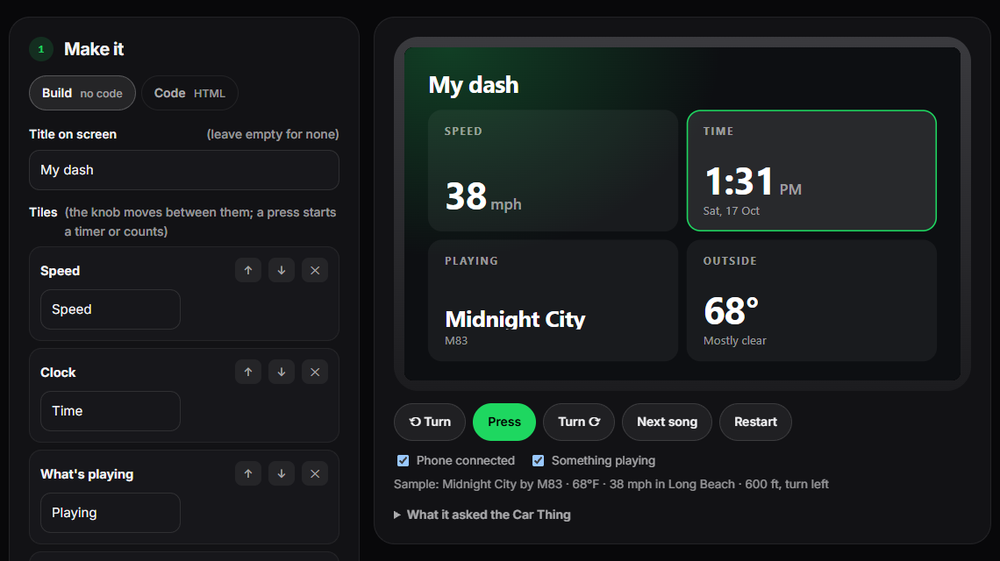
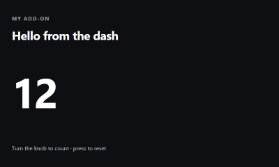
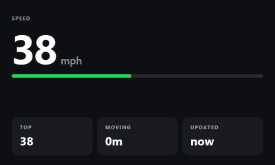
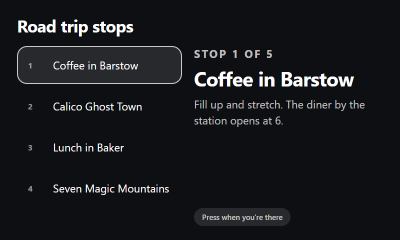
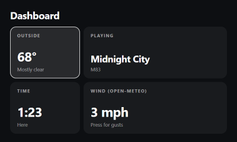
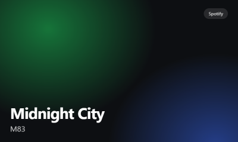

Make an add-on
Make something for the dash.
An add-on is a small web page that opens full screen on the Car Thing and works with the knob: a gauge, a timer, a game for passengers, whatever you'd like to see on the road. You don't need to know how to code to make one, and if you do, it's plain HTML.
00What an add-on is
A folder with a few files:
People find it in Home → Add-ons → Get add-ons on their Car Thing, with its picture, name, your name and its description, and install it with a press. It runs only while it's open, in a sandbox: it can't see sign-ins, settings or anything it didn't ask for, and it reaches only the websites it lists.
addon.json looks like this:
idLowercase letters, digits and dashes, 2 to 40 of them; the folder's name.name · authorShown in the catalog. 40 and 60 characters at most.descriptionOne line, up to 200 characters, on what it shows.versionLike 1.0.0. A new version is how an update reaches people.permissionsAny of now_playing, weather, location (rounded to about a kilometre, with your speed) and nav (directions from the phone). People see this list before installing.networkThe websites it reads from, by name, like api.open-meteo.com. Nothing else is reachable.imageIts picture: png, jpg or webp, up to 200 KB, ideally 400 × 240.entryThe page, if it isn't index.html.01The fastest way: the Add-on Studio
The Add-on Studio runs in your browser, with nothing to install.
- Build it from tiles: a clock, your speed, the weather, what's playing, the next turn, the arrival time, a timer, a counter, a note, or a number from a website. Pick a colour and a background. No code.
- Or write it in Code mode, from scratch or from a template.
- Try it on a Car Thing screen with a working knob and sample data, run the same way the Car Thing runs it.
- Describe it, take its picture, download it, and send it in with a form.
Your work is kept in that browser as you go, so you can come back to it.

02Start from a template
Five starting points, each a working add-on with comments in the code. Use them in the Studio's Code mode, or in the repo:





Each comes with style.css, Wisp's style kit: the colours and type of the Car Thing's own screens, and ready-made pieces (.card, .row, .chip, .big, .eyebrow, .grid-2, .grid-3; add .on to whatever the knob is on). Change --accent to make it yours.
03Try it on your computer
In the Studio, it's always running. In the repo:
That opens it at http://127.0.0.1:4848 on a Car Thing screen, run the way the Car Thing runs it: in a sandbox, with the same rules and the real bridge, against sample data (a song, a drive in Long Beach with directions, the weather). The arrow keys or the mouse wheel turn the knob, Enter presses it, R reloads after you edit. A panel shows everything it asks the Car Thing and the answer, including what it isn't allowed. Needs Node 22 or newer.
04Talking to the Car Thing
Load the bridge first, then use Wisp:
Wisp.on('knob', fn){ delta }: +1 clockwise, −1 the other way.Wisp.on('press', fn)The knob was pressed. (Back always closes the add-on.)Wisp.on('nowplaying', fn)The song changed: { name, artist, album, image, playing }. Needs now_playing.await Wisp.nowPlaying()What's playing now. Needs now_playing.await Wisp.weather(){ temp, unit, summary }, in the unit the person chose. Needs weather.await Wisp.location(){ lat, lng, speed_mph } to about a kilometre, or null with no phone. Needs location.await Wisp.nav(){ active, distance, instruction, arrival } from Google Maps on the phone. Needs nav.await Wisp.timezoneOffset()Minutes from UTC where the person is. The Car Thing's own clock runs on UTC, so use this for local times.await Wisp.fetch(url){ status, body } from a site in network, over https, up to 256 KB. The Car Thing fetches it for you.await Wisp.storage.get(key)await Wisp.storage.set(key, value)Small values kept on the Car Thing for this add-on, 16 KB in all. Gone if it's removed.Wisp.close()Back to Home.Every call can fail (no phone, no signal, not allowed), so give each one a .catch and show something sensible.
05Designing for the dash
- Readable in a glance. The screen is about 4 inches, an arm's length away, while you drive. Use big type: 22 px for text, 40 px and up for the thing that matters. One main thing per screen.
- The knob is the mouse. Show clearly what it's on (the kit's
.on), and make a press do the obvious thing. Back always leaves. - Dark, with one colour. A dark background and a single accent, like Wisp's own screens, so it's easy on the eyes at night.
- Calm. No flashing, nothing that moves fast or pulls the eye. Slow motion is fine, and should stop for people who ask their system for less motion (
prefers-reduced-motion). - Light. The Car Thing has a small processor and very little memory. Plain HTML, CSS and a little script; no frameworks needed. Prefer gradients to
filter: blur(), and refresh data every few seconds, not constantly. - Kind when things are missing. No phone, no signal, nothing playing: say so plainly instead of showing a blank screen.
- Not a substitute for the road. Nothing that needs reading paragraphs or many presses while driving. Games are for passengers; say so in the description.
06Its picture
Every add-on has one; it's the first thing people see. The Studio takes it with one button. In the repo:
That saves a 400 × 240 screenshot as preview.png (it needs Chrome or Edge). You can also use your own picture: any png, jpg or webp up to 200 KB, named in "image".
08On your own Car Thing
To use one before it's in the catalog, or one just for you, copy its folder onto the Car Thing over SSH. With the Car Thing connected and online:
Then open Home → Add-ons: it's listed with the installed ones.
?The rules it runs under
data: addresses; data comes through Wisp.fetchSo it reaches only the sites it lists.Questions or ideas for what the bridge should offer? Open an issue.